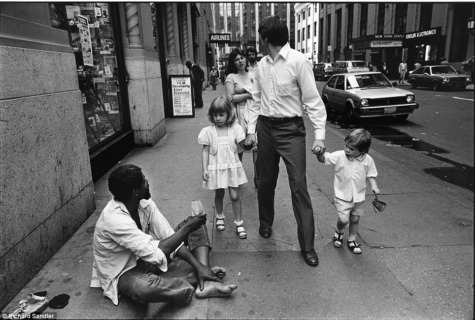
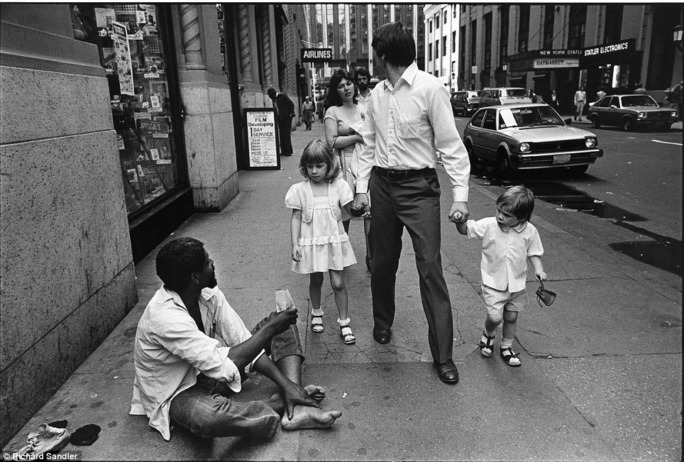
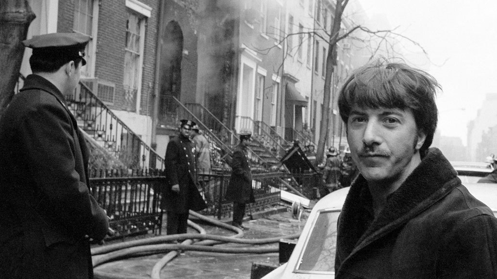
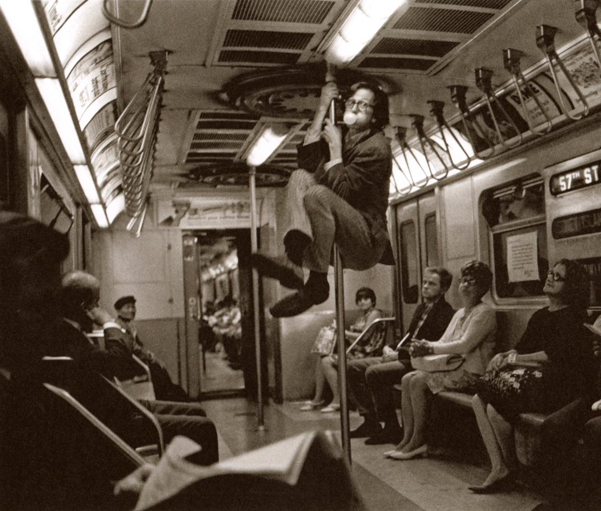
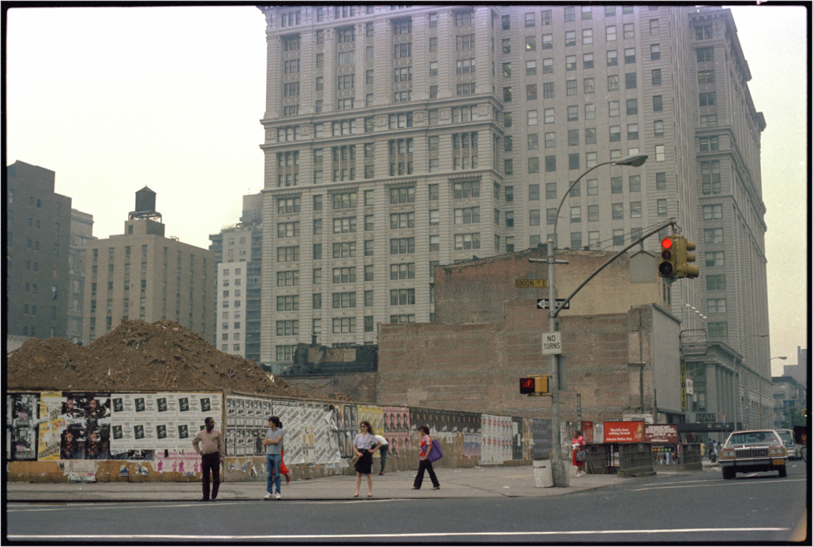
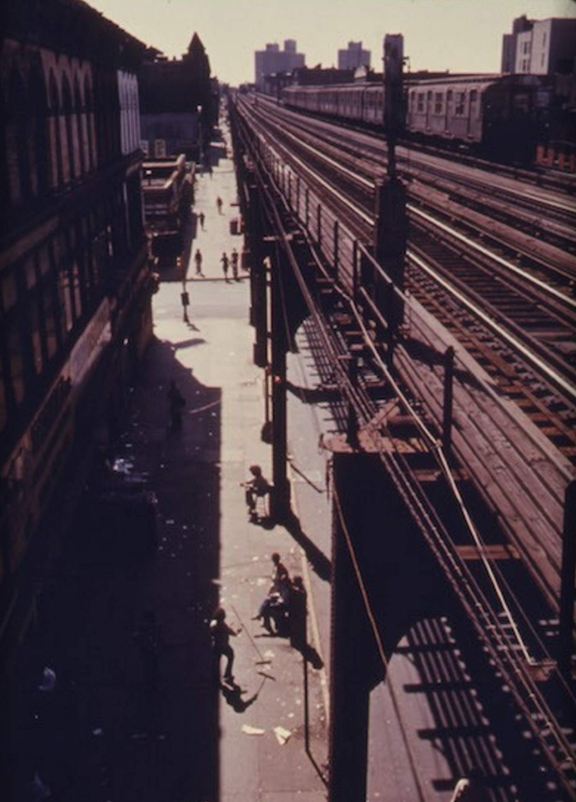
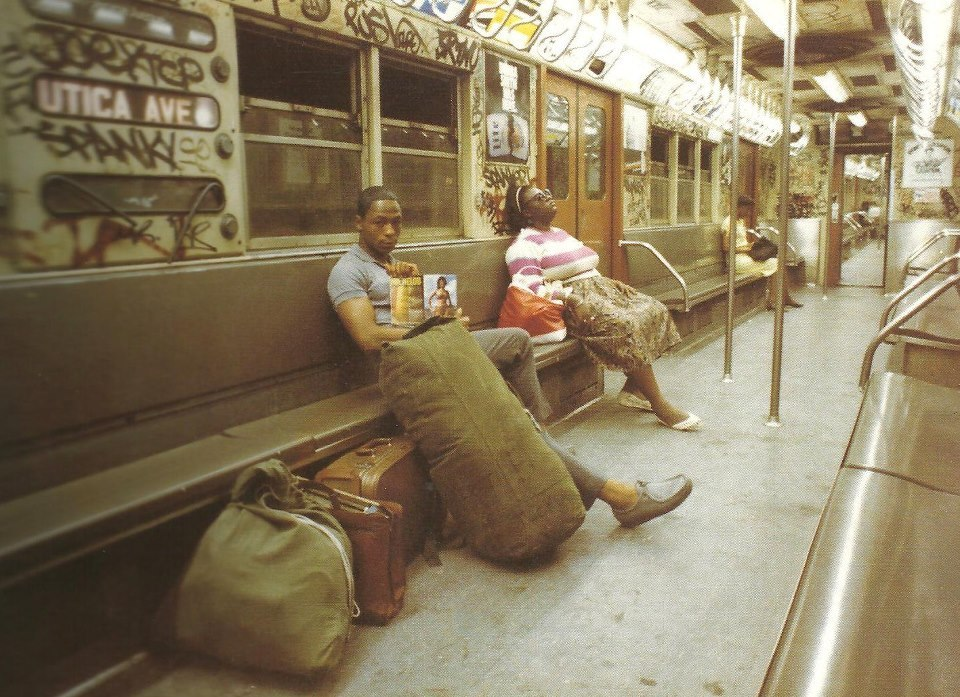
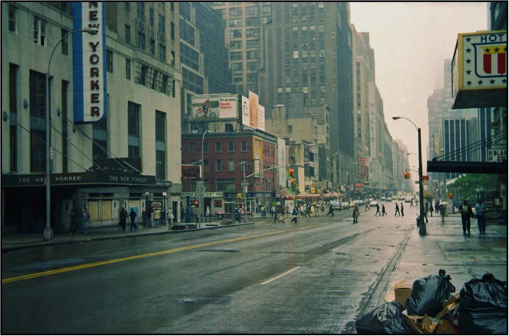

Haves and have-nots on 32nd Street in 1981.

Haves and have-nots on 32nd Street in 1981.

Dustin Hoffman on W. 11th Street in 1970. An explosion took out the townhouse next to his.

Robert Crumb, New-York - 1968
Photo : Harry Benson

(via Union Square 1985)
Pharoah Sanders, John Coltrane, Alice Coltrane, Jimmy Garrison and Rashied Ali outside the Village Vanguard, New York, May 28, 1966

Bushwick, Brooklyn 1974


New Yorker Hotel, 8th Ave near 34th Street, 1979
Thanks!